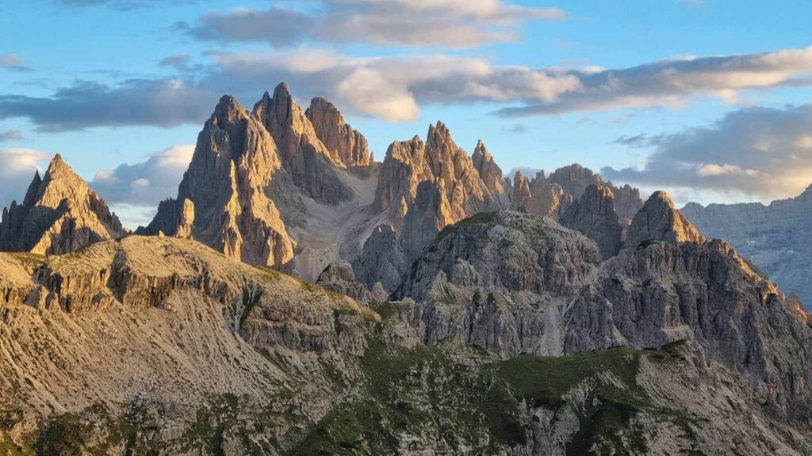
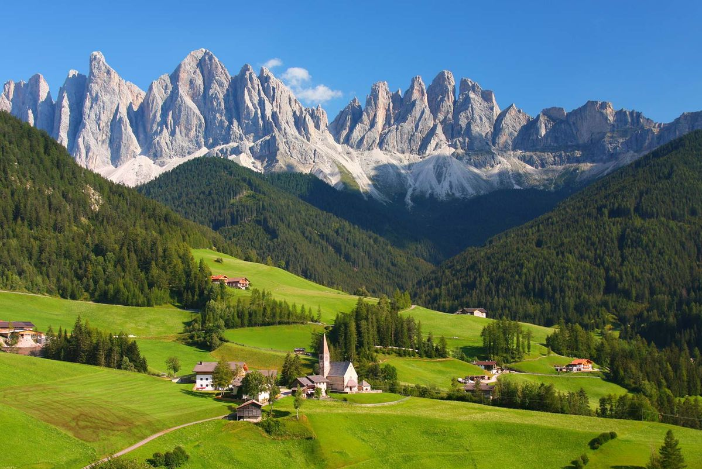

Dolomiti ili Dolomitski Alpi su planinski venac u Istočnim Alpima u Italiji, proglašeni prirodnom svetskom baštinom UNESCO- a, a koje je Franc Kafka nazvao jednim od najlepših koje je ikada video.

